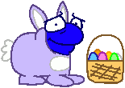

Easter/Spring Mix Desktop Icons
Animal Crossing
Animal Crossing: City Folk
DOWNLOAD
.ico (Windows Icon) file zipped (96.2 KB)

 .ico (Windows Icon) file zipped (96.2 KB)
.ico (Windows Icon) file zipped (96.2 KB)